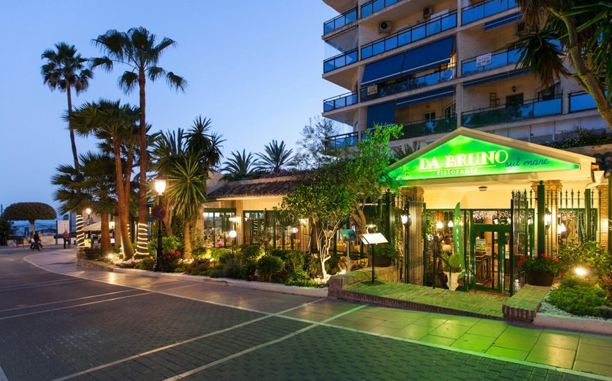
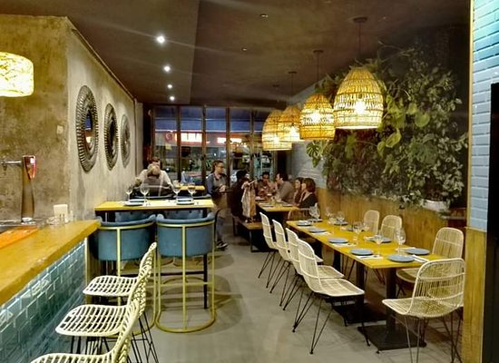

Da Bruno Sul Mare
Ubicado en el paseo marítimo de Marbella a la altura de la Venus
Maravilloso restaurante en el paseo marítimo de Marbella, con un trato
excelente y una comida expectacular.

Agüita Salá
Ubicado en la Avenida Ricardo Soriano 56.
Restaurante Pequeñito pero magnífico con platos exquisitos, tiene una
carta de calidad y variada.

Lobito de Mar
Ubicado en Avd. Bulevard Príncipe Alfonso de Holenhole, 178.
Magnifico Restaurante con buen trato y exquisita comida, si quieres
probar la comida del sur este es tu lugar.